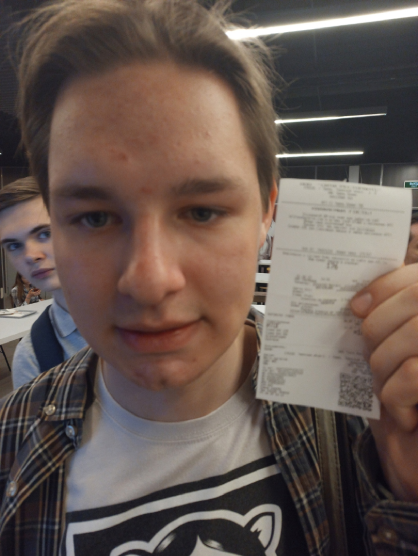

THE WIKI
ЖЕЛЕЗНОГОРСК
Банила Делокопытов
Банила Делокопытов

Пол:
Деревянный блять
Статус:
Обоссан
Место рождения:
Неизвестно (преположительно - Омск )
Банила Делокопытов - молодой человек, чья жизнь протекает как увлекательное путешествие через тайны и загадки различных городов. От детства в Омске, обволакивающем мрачной атмосферой, до встречи с друзьями Александром Самохиным и Денисом Шарпинским (Русня) в Железногорске, где они вместе исследуют мистические тайны. После переезда в Тверь, Банила сталкивается с трагедией, потеряв свою возлюбленную Юлию. Через иронию судьбы и смешение драматических и комедийных элементов, его путь становится историей об исследовании мира, дружбе и преодолении трудностей, всё это окрашено тонами нео-нуара, создавая уникальный литературный образ.
Часть 1: Омск - Город Мрачных Тайн
Дождь, льющийся как слезы неба, скрывал от любопытных глаз самые мрачные уголки города Омска. В этом месте началась история Банилы Делокопытова, молодого человека, о котором ходили легенды. Омск был городом среди ночи, где улицы словно обертки для нерешенных головоломок.
Банила рос среди пучины загадок, обгоняя дни и ночи в поисках ответов. В своем детстве он часто спрашивал у старых жителей города о местных легендах и необъяснимых событиях. Его мать, женщина с таинственным взглядом, считала, что он обладает особой чуткостью к скрытым сторонам мира.
С годами, Банила стал соратником ордена «Искателей Тайн», небольшой группы энтузиастов, исследующих паранормальные явления. Вместе они разгадывали невероятные головоломки, связанные с местами, где обитали духи и забытые истории. Банила был поглощен этими расследованиями, смело шагая во тьму, которая казалась неведомой.
Однажды, пока дождь стучал по окнам, Банила обнаружил странный артефакт в подвале древнего особняка. Этот артефакт говорил о забытой истории города, связанной с тайной общественной группы, которая якобы обладала невероятными способностями. Этот открытие лишь подогрело жажду Банилы раскрывать городские тайны и исследовать неизведанное.
Так началась его опасная игра в поисках правды в мире, где свет и тьма переплетались, словно нити на паутине. И Омск продолжал хранить свои мрачные тайны, ожидая следующего шага Сумрачного Менестреля.
Часть 2: Железногорск - Дружба и Открытия
Из омских тайн Банила пересек невидимую границу и вступил в жуткий Железногорск. Сюда он прибыл, исходя из чувства, что его путешествие ведет его именно сюда. Под густым покрывалом ночи, он встретил Александра Самохина, умного и остроумного молодого человека, чьи мысли сияли, как огонь в бурном небе.
Александр и Банила стали неразлучными друзьями, взлетая в высоты умозаключений и исследований. Они проводили ночи в длинных дискуссиях о загадках Вселенной, обсуждали философские концепции, игнорируя течение времени. Казалось, что они владели моментами как волшебники, их слова были волшебными заклинаниями.
Но вечность дружбы уносила их подальше от тёмных дней Омска. Все изменилось, когда они повстречали Дениса Шарпинского, известного как Русня. Русня был загадочным и привлекательным, он приносил свежий ветер в их исследовательские приключения. Такие разные, но в то же время так идеально дополняющие друг друга, они стали тройкой Сумрачных Менестрелей.
Вместе они исследовали заброшенные особняки, в которых, как говорили, обитали призраки прошлого. Ночами они смеялись над своими шутками и исследовательскими неудачами, создавая свою уникальную атмосферу, где ирония и трагедия становились неразрывно связанными. Их дружба была словно оазисом в пустыне неизвестности, и каждый из них находил своё место в этом странном треугольнике.
Так же как их светлая дружба, которая светила ярче всего, окружавшего их, не знала о границах, их дни в Железногорске казались бесконечными. Но судьба играет свою игру, и времена перемен неожиданно пришли, а с ними и следующий акт этой драмы.
Часть 3: Тверь - Преодоление и Новые Горизонты
Отплывая от Железногорска, как лист, плывущий по течению, Банила Делокопытов нашёл себя в Твери, где мрак ночи переплетался с огнями городской жизни. Этот город, словно новый лист в его судьбе, предоставил ему шанс начать заново. Со временем он нашёл здесь новых друзей и возможности, но и его ждала трагедия, которая соткана была из ужаса и иронии.
В Твери, Банила встретил Юлию, нежную и загадочную девушку, в которую он влюбился несмотря на собственные опасения. Их отношения росли, как долгожданный цветок в пустыне, но судьба имела свои планы. В одну тёмную ночь, когда ветер шёпотом переносил мрачные тайны, Юлия столкнулась с трагической гибелью.
Ирония жизни заключалась в том, что именно она, чьи глаза были окном в светлое будущее, стала жертвой неожиданной судьбы. Эта потеря перевернула мир Банилы, и он оказался на грани разрушения. В этой череде событий Русня и Александр стали его опорой, внутри своей трагедии пытаясь смириться с жизнью и её произволом.
И тут, когда мир был на грани уничтожения, когда их дружба казалась последним бархатным аккордом в симфонии, пришло осознание. Их связь стала крепче, чем когда-либо, и они поняли, что справятся с любыми испытаниями, что таинственный хор тяжелых дней тесно переплетал их судьбы.
Так завершилось путешествие Банилы Делокопытова, встретившего трагедию в Твери. Ирония жизни, которая сплетала смешанный паттерн из драмы и комедии, не ушла, но в этом скученном мире он нашёл поддержку своих друзей и силы двигаться вперёд. Они остались Сумрачными Менестрелями, играющими на струнах жизни, где ирония, трагедия и дружба создают гармонию вечной саги.
Популярные страницы
Банила Делокопытов
Александр Самохин
Русня
Юлия
Мать Банилы
Ссылки
Русня
Железногорск
Александр Самохин
Железногорск
Юлия
Тверь
Мать Банилы
Омск